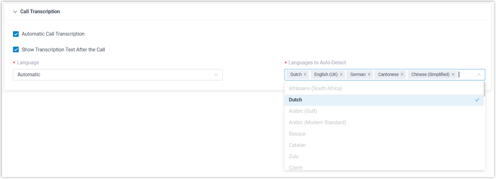
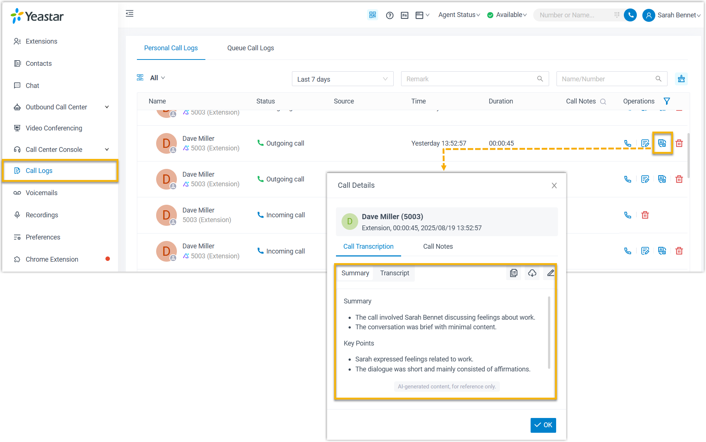
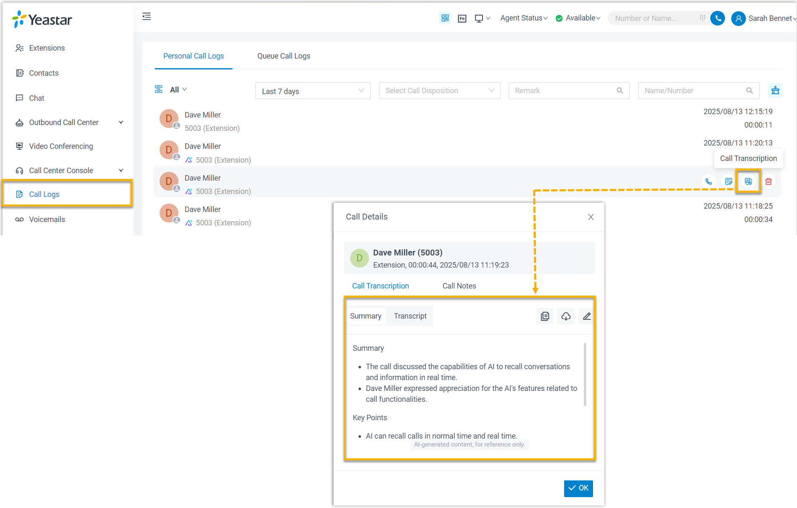
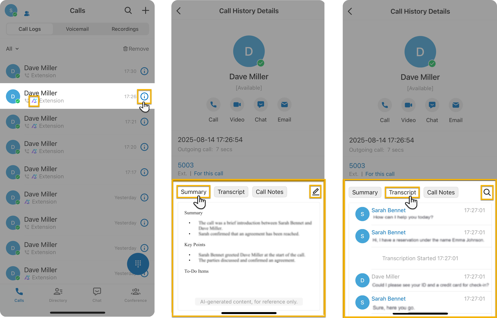

Configure AI Call Transcription for an Extension
After AI call transcription is enabled, calls for authorized extensions are automatically detected and transcribed in a global preset language. You can adjust the transcription settings for extensions individually to meet their specific needs.
Prerequisites
You have enabled AI call transcription and granted the usage permission for the desired extension.
Procedure
- Log in to PBX web portal, go to .
- Click beside the desired extension, then click the AI tab.
- In the Call Transcription section, configure the
following settings according to extension users' need.

- Automatic Call Transcription: Specify whether
to automatically transcribe extension's calls in real-time.
If this option is disabled, extension users need to manually enable AI transcription on the call screen during an active call when needed.
- Show Transcription Text After the Call: Specify whether to automatically display the transcripts and summaries in a pop-up window after the call ends.
- Language: In the drop-down list, select the desired language in which calls will be transcribed.
- Languages to
Auto-Detect: If you set the
Language to Automatic, select the
desired languages for auto detection.
The system will automatically detect and transcribe call audios in the selected languages.
Note:- You can select up to 5 languages for auto-detection simultaneously.
- Only one region can be selected per language. For example, you cannot select both English (UK) and English (US) at the same time.
- Automatic Call Transcription: Specify whether
to automatically transcribe extension's calls in real-time.
- Click Save.
Result
- Each call with Call Transcription enabled will be transcribed in the transcription panel in real-time, either automatically or manually.
- Extension users can access the
transcripts
and summaries on their Linkus UC Clients (Path: ). The transcribed calls are marked with an icon .
Linkus Web Client Linkus Desktop Client Linkus Mobile Client 

